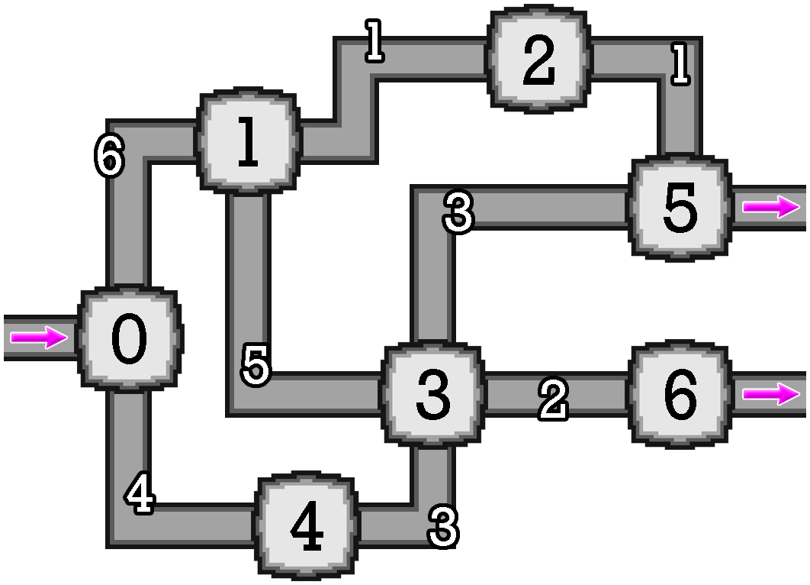

Lampiran dari soal ini bisa diunduh di sini.
Terdapat sebuah candi batu yang terdiri dari $N$ ruangan, dinomori dari $0$ sampai $N - 1$, dan $M$ lorong, dinomori dari $0$ sampai $M - 1$. Menggunakan lorong $i$ ($0 \le i \le M - 1$), Anda bisa berjalan dari ruangan $U[i]$ ke ruangan $V[i]$, dan sebaliknya. Diketahui pula bahwa candi ini terhubung sehingga Anda bisa berjalan dari suatu ruangan ke ruangan lain mana pun dengan menggunakan satu atau lebih lorong. Pintu masuk terletak di ruangan $0$, dan terdapat $K$ pintu keluar yang terletak di ruangan $P[0], P[1], \ldots, P[K - 1]$. Terdapat setidaknya satu pintu keluar dan tidak ada pintu keluar di ruangan $0$.
Terdapat pedagang batu di setiap lorong. Setiap kali Anda melewati lorong $i$ ($0 \le i \le M - 1$), si pedagang batu akan memberikan Anda sebuah batu dengan berat $W[i]$, yang harus Anda terima. Si pedagang akan tetap memberikan Anda sebuah batu walaupun Anda sudah pernah melewati lorongnya.
Setiap kali Anda menerima sebuah batu, Anda akan memasukkannya ke dalam tas Anda. Setiap kali sebuah batu baru dimasukkan ke dalam tas, setiap batu lain dengan berat yang lebih kecil atau sama dengan batu yang baru akan hilang. Batu yang baru Anda terima tidak akan hilang ketika Anda memasukkannya ke dalam tas.
Anda memasuki candi melalui pintu masuknya, dan ingin keluar melalui pintu keluar mana pun. Anda tidak harus langsung keluar ketika menemukan pintu keluar. Anda bebas untuk berjalan melalui ruangan maupun lorong mana pun sebanyak yang Anda mau. Berapakah jumlah berat batu minimum yang mungkin yang ada di dalam tas Anda setelah Anda keluar?
long long min_weight(int N, int M, int K, std::vector<int> U, std::vector<int> V, std::vector<int> W, std::vector<int> P)
Perhatikan pemanggilan berikut.
min_weight(7, 8, 2, [0, 1, 2, 3, 3, 0, 1, 3], [1, 2, 5, 5, 4, 4, 3, 6], [6, 1, 1, 3, 3, 4, 5, 2], [5, 6])
Candi batunya dapat diilustrasikan sebagai berikut.

Salah satu strategi Anda berjalan melalui candi ini adalah sebagai berikut.
Tidak ada cara lain untuk keluar dari candi dengan berat tas yang lebih sedikit. Oleh karena itu, prosedur harus mengembalikan $6$.
Contoh grader membaca masukan dalam format berikut:
Contoh grader mencetak jawaban Anda dalam format berikut:
min_weights.